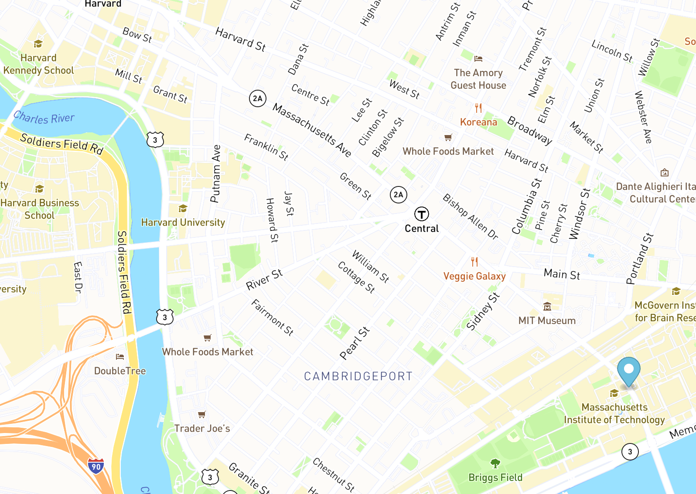

<!doctype html>
<html lang="en">
  <head>
    <meta charset="utf-8">
    <meta name="viewport" content="width=device-width, initial-scale=1">
    <link href="https://cdn.jsdelivr.net/npm/bootstrap@5.2.3/dist/css/bootstrap.min.css" rel="stylesheet" integrity="sha384-rbsA2VBKQhggwzxH7pPCaAqO46MgnOM80zW1RWuH61DGLwZJEdK2Kadq2F9CUG65" crossorigin="anonymous">
    <link href="styles.css" rel="stylesheet">
    <link rel="canonical" href="https://getbootstrap.com/docs/5.2/examples/features/">
</head>
  <body>
    <body style="background-color:white;">
    <script src="https://cdn.jsdelivr.net/npm/bootstrap@5.2.3/dist/js/bootstrap.bundle.min.js" integrity="sha384-kenU1KFdBIe4zVF0s0G1M5b4hcpxyD9F7jL+jjXkk+Q2h455rYXK/7HAuoJl+0I4" crossorigin="anonymous"></script>
    <script type="module" src="https://unpkg.com/ionicons@5.5.2/dist/ionicons/ionicons.esm.js"></script>
    <script nomodule src="https://unpkg.com/ionicons@5.5.2/dist/ionicons/ionicons.js"></script>
</body>
</html>

  <main>
    <h1 class="visually-hidden">Header</h1>
    <div id="Home" class="container">
      <header class="navbar navbar-dark bg-dark d-flex flex-wrap justify-content-center py-3 mb-4 border-bottom">
        <a class="navbar brand d-flex align-items-center mb-3 mb-md-0 me-md-auto text-light text-decoration-none">
          <svg class="bi me-2" width="40" height="32"><use xlink:href="#bootstrap"/></svg>
          <span class="fs-4">Hunter Boudreau</span>
        </a>
        <ul class="nav nav-pills">
          <li class="nav-item"><a href="#home" class="nav-link active" aria-current="page">Home</a></li>
          <li class="nav-item"><a href="#About" class="nav-link">About</a></li>
          <li class="nav-item"><a href="#Projects" class="nav-link">Projects</a></li>
          <li class="nav-item"><a href="#Contact" class="nav-link">Contact</a></li>
        </ul>
      </header>
    </div>
      <div class="b-example-divider"></div>

  <div id ="About" class="container col-xxl-8 px-8 py-50">
    <div class="row flex-lg-row-reverse align-items-center g-5 py-50">
      <div class="col-10 col-sm-8 col-lg-5">
        
      </div>
      <div class="col-md-5">
        <h1 name="#About" class="display-5 fw-bold lh-5 mb-2">About Me</h1>
        <p class="lead">After high school I started working as an electrician. I've always had interest in computers and coding, so I decided to change career paths and move into one more oriented to my hobbies. This brings me to the now, where I hope to continue educating myself in this field and make a career out of it.</p>
        <div class="d-grid gap-2 d-md-flex justify-content-md-start">
        </div>
      </div>
    </div>
  </div>
  <div id ="Projects">
    <h1> Some example projects</h1>

  <div class="container px-4 py-5" id="hanging-icons">
    <div class="row g-4 py-5 row-cols-1 row-cols-lg-3">
      <div class="col d-flex align-items-start">
        <div class="text-bg-light d-inline-flex align-items-center justify-content-center fs-4 flex-shrink-0 me-3">
          <svg class="bi" width="0em" height="0em"><use xlink:href="#toggles2"/></svg>
        </div>
        <div>
          
          <h3 class="fs-2">PacMen</h3>
          <p>This game lets you add pacmen to the screen then begin their movement across the screen with varying speeds and angles.</p>
          <a href="https://hunterboud.github.io/pac-man/" class="btn btn-primary" target="_blank">
            Play Now
          </a>
        </div>
      </div>
      <div class="col d-flex align-items-start">
        <div class="text-bg-light d-inline-flex align-items-center justify-content-center fs-4 flex-shrink-0 me-3">
          <svg class="bi" width="0em" height="0em"><use xlink:href="#cpu-fill"/></svg>
        </div>
        <div>
          
          <h3 class="fs-2">Eye Exercise</h3>
          <p>This game is a very simple cursor tracker, that will follow your cursor around the screen with a pair of eyes.</p>
          <a href="https://hunterboud.github.io/Eye-Exercise/eyes.html" class="btn btn-primary" target="_blank">
            Play Now
          </a>
        </div>
      </div>
      <div class="col d-flex align-items-start">
        <div class="text-bg-light d-inline-flex align-items-center justify-content-center fs-4 flex-shrink-0 me-3">
          <svg class="bi" width="0em" height="0em"><use xlink:href="#tools"/></svg>
        </div>
        <div>
          
          <h3 class="fs-2">Real Time Bus Tracker</h3>
          <p>This script shows real time updates on the position of the bus that goes between MIT campus and Harvard campus in Cambridge.</p>
          <a href="https://hunterboud.github.io/Real-Time-Bus-Tracker/" class="btn btn-primary" target="_blank">
            Play Now
          </a>
        </div>
      </div>
    </div>
  </div>
  </div>
  <div id ="Contact">
    <h1> Contact me</h1>
    <a href="https://github.com/HunterBoud" target="_blank">
        <ion-icon name="logo-github"></ion-icon>
    </a>
    <a href="https://www.linkedin.com/in/hunter-boudreau-8555ab261/" target="_blank">
        <ion-icon name="logo-linkedin"></ion-icon>
    </a>
    <a href="mailto: hjboud@gmail.com" target="_blank">
        <ion-icon name="mail-sharp"></ion-icon>
    </a>
  </div>
  <main>
